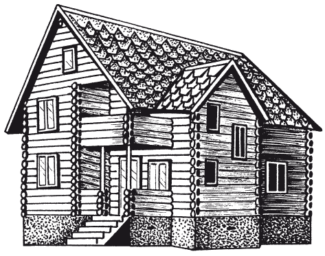
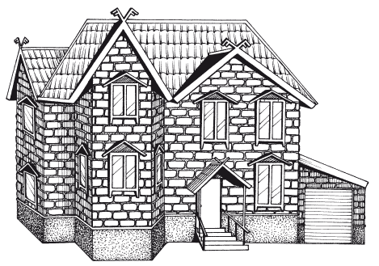

Дом для любителей русского стиля.

Одним из самых модных в архитектуре современных загородных домов сегодня становится стиль «кантри», который иначе называют рустикальным. Это не случайно, поскольку данный стиль отражает стремление уставшего от городской суеты человека найти спокойствие, отдохновение, комфорт и уют в деревенском образе жизни.
Стиль «кантри» многолик, и в нем могут быть отражены самые разные этнические мотивы. Можно воспроизвести дух европейской провинции, американского ранчо, но чаще обращаются к тому, что ближе, – так называемому русскому стилю. И следует отдать должное – времена «новорусской» безвкусицы с аляповатым декором под «дворцовый стиль» отходят в прошлое, и мы все чаще обращаемся к домам, которые умели возводить наши далекие предки – славяне.
Из истории русского зодчестваСооружение жилого дома, которое в наше время превратилось в технический акт, для славян – наших далеких предков – имело глубочайший смысл. В те времена каждый человек строил жилье для себя и своей семьи самостоятельно или звал на помощь родственников, соседей, друзей. При возведении дома исходили не только из практических соображений (близости реки или озера, насколько дом открыт холодным ветрам и т. д.), но и обязательно учитывали, насколько благоприятно место, исходя из главной идеи славянского язычества о том, что человек – часть Вселенной и должен жить в гармонии со всеми силами Природы. Жилье нельзя было возводить на месте бывших дорог, иначе из дома могли уйти жизнь, здоровье и достаток. Запрещалось строить на спорных участках – не будет ладу с соседями, а также в местах, где произошли какие-нибудь несчастья и стихийные бедствия – все это может повториться. Недопустимо было возводить избу на старом кладбище, иначе нарушится покой предков, и души усопших в отместку уведут семейство собой. Возводить дом начинали с раннего утра, поскольку согласно древним верованиям славян лучезарная мощь восходящего солнца несла торжество добра, справедливости, светлых сил.
Жилье строили не просто добротным и крепким, но нарядным: фасад покрывали тонкой причудливой резьбой, белили, окрашивали яркими красками или расписывали. Защитить славянское жилище был призван «конек» на крыше, который отгонял любое зло, в том числе «скотьи хворобы». Позднее конька заменил петушок. Железный флюгер-птица служил в качестве украшения крыши, а также охранял дом от нечисти.
В городах возводили «хоромы» – первоначально так называли обычное жилье, а позже стали именовать большие, богато украшенные резьбой, подтесом, росписью дома, в которых жили бояре.
Дома крыли черепицей и свинцовыми листами, а для карнизов использовались шифер, керамическая плитка.
«Зданиями» на Руси называли только каменные или кирпичные постройки, а «зодчими» именовали их строителей (древнерусское слово «зод» означало «глина, керамика»). Из камня первоначально возводились церкви, а каменное жилье, которое строилось из камня (песчаника и известняка) или из кирпича на растворе, появилось на Руси только в XI в., однако обходилось оно дорого, а потому доступно было только очень богатой знати.
Большинство народа жили в избах. Русская изба чаще всего была двухкамерной (изба-сени, изба-клеть). Ее планировка весьма устойчива: жилая часть (отапливаемый сруб) и клеть – место для хранения домашнего имущества и ночлега в летнее время. «Курные» избы не имели печи с трубой и топились «по-черному». Дым выходил через дверь или специальное отверстие над ней, а позже – через деревянную вытяжку на крыше. Окна представляли собой продолговатые небольшие отверстия высотой в одно бревно, которые изнутри «заволакивались» дощечками. В курных избах лучше сохранялось дерево, быстрее сохла крыша, однако в них было дымно, и требовалась ежедневная влажная уборка.
Изба с печью и трубой топилась «по-белому». Печь традиционно стояла слева или справа от входа устьем к противоположной стене. Чистая половина избы включала горницы, зимовки, боковушки, на чердаке размещалась светелка (летняя комната). Перед светелкой часто делали балкон с декоративными ограждениями и портиком. Изба ставилась прямо на землю или на подклет (хозяйственное помещение под полом). Некоторые избы имели еще и прируб.
Посадский дом предназначался для торгово-ремесленного люда и имел свои особенности. Он представлял собой горницу, возведенную на высоком подклете, который служил складом для инвентаря и своеобразным холодильником. Основу жилого дома составляла клеть, сложенная из 6–7 венцов толстых (до 30 см в диаметре) бревен. Над горницами основного яруса располагались светлицы. На случай снежной зимы вход осуществлялся через высокое крыльцо и сени. Скромные по планировке и убранству посадские дома и нарядные палаты знати строились «глаголем» (то есть в форме буквы «Г»).
При богатых палатах могла находиться и домашняя церковь, которая соединялась с домом специальным переходом. Обычно богатый дом имел, как минимум, три комнаты: столовую, спальню и кухню. Если дом был большим, то горница и спальня (опочивальня) хозяина располагались в центральной части дома, недалеко от красного крыльца, а женские покои – в глубине. Прием гостей происходил в специальном помещении – гриднице.
Русские дома обычно имели два крыльца. Парадное называлось красным и выходило в передний двор усадьбы, к воротам, а заднее вело на хозяйственный двор. К концу XVII в. фасад дома стал смотреть прямо на улицу, а не во двор, как раньше, а красное крыльцо с шатром в виде теремка и точеными балясинами-подпорами превратилось во встроенную лестницу. Окна украшались коваными из железа или решетчатыми («купчатыми») ставнями с затейливыми орнаментальными рисунками. Двери богато декорировались наличниками, сверху зачастую имели арочное обрамление, а по углам – лопатки, украшались коваными фигурными петлями, «секирными» железными замками и львиными головами с металлическими кольцами.
Современный загородный дом в русском стилеПостроить загородный дом в русском стиле означает осуществить свою детскую мечту иметь собственный теремок. Предстоит достаточно большая работа по поиску старинных предметов быта, которые должны украсить фасад и интерьер дома. Они помогут в гармонизации световых решений, подчеркнут красоту природных материалов, превратят обустройство вашего дома в бесконечное творчество, возможно, даже пробудят интерес к народным ремеслам.
Русский дом в деревенском стиле – это обилие натуральных материалов, используемых как в строительстве, так и в отделке. Главные из них – дерево и камень, зачастую искусственно состаренные. Очень важно подбирать и хорошо обрабатывать строительные материалы, поскольку от этого зависит общее впечатление от дома.
На Руси всегда в почете были деревянные дома, и нашим современникам также всегда мила простота деревянных строений. Конечно, кирпич дает ощущение солидности, практически неограниченные варианты отделки и возможность реализовать весьма смелые дизайнерские решения, однако дерево олицетворяет экологичность, близость к природе, обладает неповторимым ароматом, а благодаря сочетанию традиций и современных технологий также можно воплотить самые интересные дизайнерские идеи. Архитектура деревянных домов достаточно спокойна и сбалансирована. Она вызывает ощущение уверенности, жизненной устойчивости, обладает необыкновенно притягательной аурой уюта. В зависимости от того, какой колорит владельцы дома хотят создать в интерьере, могут меняться все декоративные элементы. Так что по комфорту и теплу оба типа построек оказываются примерно равны. А вот чтобы выбрать тот или иной тип деревянного дома (рис. 3), надо кое-что знать о способах строительства, используемых материалах и их свойствах.

Дом из клееного бруса
Дом из клееного бруса выбирает тот, кто ценит технологичность и точность. Клееный брус хорош тем, что одинаково сух внутри и снаружи, поскольку доски, из которых он склеен, намного легче просушить, чем толстое бревно. Так что такой дом не трескается и его не «ведет». Правда, дом из клееного бруса дает незначительную усадку, и это следует учитывать при строительстве. Клееный брус наиболее технологичен, поскольку изготовленные в заводских условиях узлы не требуют доводки на стройплощадке. К тому же клееный брус бывает длиной до 12 м, поэтому можно избежать дополнительных зарубов, которые неизбежно приводят к потере тепла.
Оцилиндровка и брус, как правило, рубятся «в чашку», иногда «в лапу», с плотной конопаткой. Есть и более сложные зарубы, однако они редко применяются в заводских условиях. При ручной рубке делается замок на чашке. При этом специальная полочка внутри заруба закрывает щель, препятствуя утечке тепла.
Рубленые домаРубленые дома не похожи один на другой, к тому же обладают неповторимой красотой естественности. Проще всего срубить избу-пятистенку с простыми прямыми углами, однако многие домовладельцы отдают предпочтение домам сложной архитектурной формы. Различают архангельскую, костромскую, ивановскую рубку. Среди множества традиционных способов рубки знатоки отдают предпочтение таким вариантам, как «в крюк» или «ласточкин хвост». От способа и качества рубки углов зависят не только красота дома, но и его теплосберегающие свойства, причем это в равной мере относится и к ручной, и к заводской рубке.
Долговечность и цена сруба напрямую зависят от сорта древесины. Дорогая лиственница прослужит примерно вдвое дольше, чем сравнительно дешевая сосна. Однако лиственница, имеющая большую плотность, лучше проводит тепло. Поэтому, чтобы обеспечить теплосбережение в доме из лиственницы, диаметр бревна должен составлять 28 см, тогда как в рубленом доме из сосны бревна могут быть диаметром 24 см. Иногда нижние венцы рубят из лиственницы, а далее – из сосны. Россияне выбирают обычно более смолистую сосну, тогда как европейцы отдают предпочтение ели, у которой меньше сучков.
Очень часто рубленые дома делают из кедра. Дерево это весьма интересно: снаружи оно плотное, а внутри даже мягче сосны. Как и лиственница, кедр стоит почти вдвое дороже сосны, но является природным антисептиком, поэтому его меньше поражают грибок и плесень.
Если стены светлые, то остальные части дома могут быть покрашены в темный цвет, а при темных стенах (из кирпича, просмоленных бревен) детали лучше покрасить белилами или светлыми, яркими красками. В то же время излишне пестрой, дробной покраски частей дома в разные цвета нужно избегать, поскольку это может испортить весь вид постройки.
Не стоит приступать к строительству деревянного дома осенью. Дело не только в непогоде и повышенной влажности воздуха. Строители знают, что лес зимней рубки намного качественнее, чем тот, что срублен в другие времена года. Причина в том, что зимой деревья «спят», в них не бродят соки, и древесина получается суше на всю глубину. Однако к осени заготовленный зимний лес обычно заканчивается, и строители могут использовать древесину летней рубки, которую подсушивают всего 1–2 месяца. Сруб из такой древесины будет трескаться сильнее, а значит, и простоит недолго.
В сельской местности особенно широко используются при строительстве местные материалы. На Севере это дерево, на Юге – саман, кирпич и глина, естественный камень и черепица. Эти материалы красивы своей естественной красотой, и дом, сделанный из природных материалов, всегда выглядит добротным и привлекательным.
При строительстве следует учитывать, что некоторые материалы очень хорошо выглядят в сочетании друг с другом, а другие не столь красивы. Это объясняется законами контраста фактуры (поверхности) и цвета материалов. Например, всегда хорошо сочетаются шершавый естественный «дикий» камень и гладкие кирпичные, деревянные или оштукатуренные поверхности. Поэтому стенку или цоколь, выложенные из такого камня, лучше оставить в естественном виде, без штукатурки и окраски.
Светлые оштукатуренные или обмазанные глиной и побеленные стены отлично выглядят рядом с красной черепичной крышей, а дом из темного кирпича смотрится очень симпатично под крышей из черепицы светлого, сливочного цвета. Это относится к покраске деталей дома – ставен, ветровых досок, карнизов и т. п.
Современная усадьбаС XVII в. началась активная европеизация Руси, а потому самобытный национальный стиль стал размываться. Сегодня многие отдают предпочтение комфортабельным каменным домам. Такой дом надежен, теплый, он долго выглядит привлекательно и обычно не доставляет своим хозяевам хлопот с ремонтом. Удобно строить современный дом из пенобетонных блоков с облицовкой кирпичом. Такой дом великолепно смотрится, он экономичен в эксплуатации. В летнее время может работать «черное» крыльцо – из кухни прямо в сад (которое, кстати сказать, оформлено отнюдь не хуже «парадного»). Попасть в дом можно также через топочную. В доме можно сделать еще одну дверь – из гаража в подлестничное пространство теплоизолирующего тамбура. Тогда в холодную дождливую погоду не надо будет выходить на улицу, чтобы завести машину.
Однако в любой самый современный дом можно внести элементы русского декора. Для этого входную дверь нужно украсить наличниками с деревянной резьбой, сделать мощный деревянный запор, железные петли и кольца, оббить дверь коваными железными полосами. Над дверью повесить медный или бронзовый звонкий колокольчик, он будет извещать о приходе гостей или домочадцев и отпугивать злые силы. Окна могут быть с красивыми декоративными решетками, железными или деревянными. Оконные рамы лучше не закрашивать, оставить их натуральный цвет (рис. 4).
